배경색상(background-color) : 문자(red, blue, ...) / 16진수 코드(#ff0000 ->
#f00) / hsl(색상(deg), 채도(%), 명도(%)) / rgba(225, 0, 0, 1)
배경이미지(background-image:url(이미지의 파일 또는 경로))
< 사용법 >
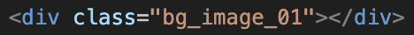
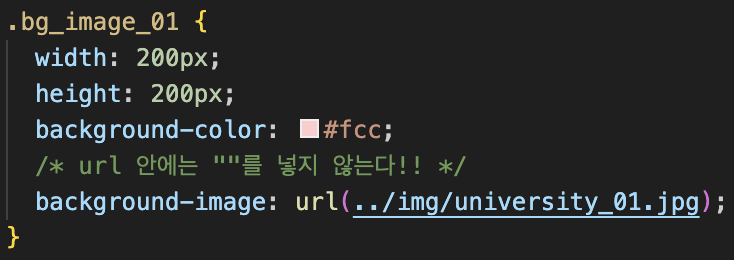
배경 위치선언(background-position)
수평위치선언 : left, center, right, 0~100%, px
수직위치선언 : top, center, bottom, 0~100%, px
< 사용법 >
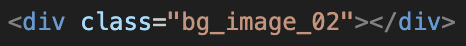
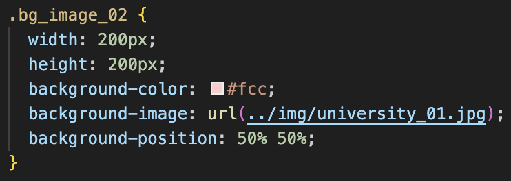
배경 크기조정(background-size)
갸로사이즈 세로사이즈 / cover / contain
cover : 배경 이미지를 가능한 크게 확대하여 배경 영역 전체를 채운다.
이미지의 원래 비율은 유지된다. 이미지의 일부가 잘릴 수 있다.
contain : 배경 이미지를 원래 비율을 유지하면서 가능한 크게 확대한다.
이미지는 배경 영역 전체를 채우지 않을 수 있다. 이미지는 절대 잘리지
않는다.
< 사용법 >
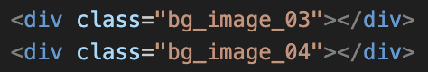
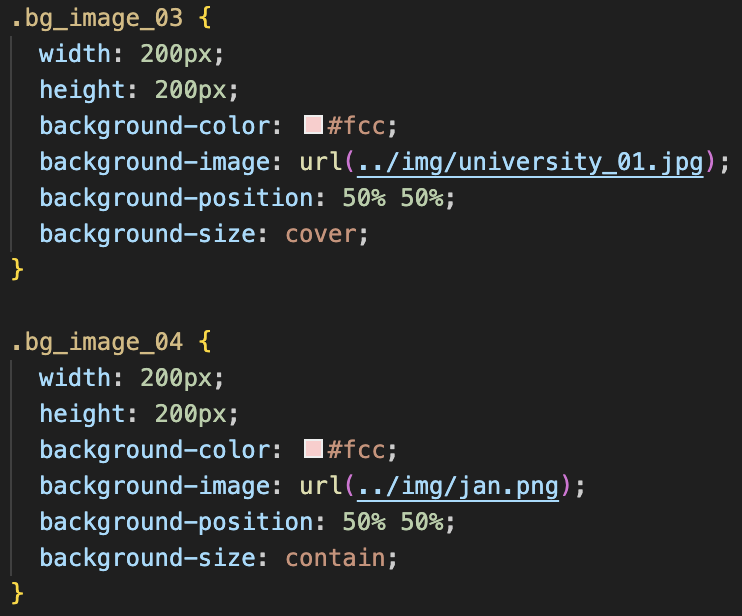
배경의 패턴 유무(background-repeat)
< 사용법 >
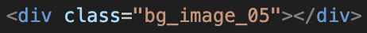
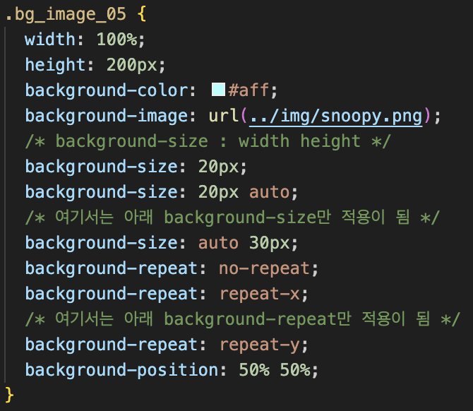
parallax 효과부여(background-attach) : scroll(기본값) / fixed
< 사용법 >
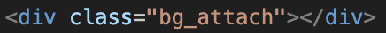
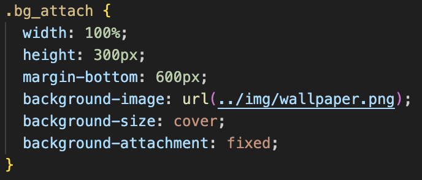
통합 background
background : 배경색상 배경이미지 반복여부 배경붙이기 배경위치/배경사이즈
< 사용법 >
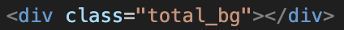
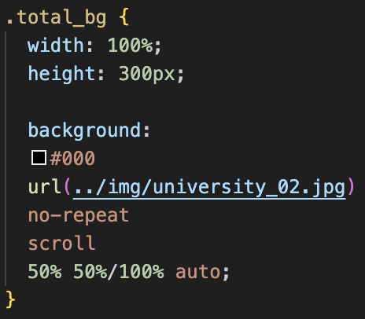
부모 배경과 자식배경의 배치 + 중앙에 글자 배치